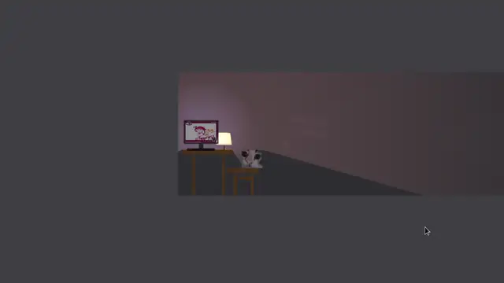

I initially wanted to just open Godot and see if I can make fun movement mechanics in 2D. Then I kind of got carried away.
It features somewhat complex movement mechanics: speed accumulation through wall jumps, bhop to preserve momentum, ground pound, ramps that redirect your movement. This is where I got basic scripting practice and what started my passion for games. I also got to make cool speed trails, particles and some animations. My skills in coding have greatly improved since this game, however, I can't say the same for animating and drawing. It was a lot of fun to make. The playtime is about 10 minutes. I confess I stole a bunch of assets (you can tell which ones), but it was never planned as something that would be shown to someone I don't know personally. Obviously, I would never allow myself such a thing in a project that is any more serious than this.
You can't play this one for privacy reasons :(
